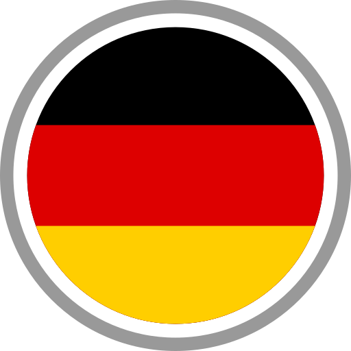

Краткое описание кандидата:
Профессиональный опыт:
- Веб-разработка (Full-Stack, JavaScript): 8 лет опыта, включая фронтенд и бэкенд разработку. Опытный в использовании всех основных JavaScript фреймворков и библиотек.
- Веб-дизайн и 3D-графика: 8 лет опыта. Глубокое понимание UI/UX, способность создавать визуально привлекательные и функциональные дизайны.
- Стартапы: Практический опыт разработки стартапов, включая планирование, разработку и запуск новых проектов.
Особые навыки и достижения:
- Менторство и обучение: 4 года опыта в качестве ментора, развитие навыков команды и индивидуальное обучение.
- Лидерские качества: Способность возглавлять и координировать проектные команды, обеспечивая эффективное взаимодействие и соблюдение сроков.
- Коммуникативные навыки: Активный видеоблогер, способный четко и убедительно выражать идеи, принципы программирования и личностное развитие.
- Личные качества: Здоровый образ жизни, высокий уровень самодисциплины и организованности.
Ценность для вашей компании:
- Многофункциональность: Способность эффективно работать в различных ролях, от веб-дизайна до full-stack разработки.
- Адаптивность: Опыт работы в разнообразных командах и на проектах различной сложности, готовность к быстрому обучению и адаптации к новым технологиям.
- Результативность: Доказанный опыт ведения проектов от концепции до реализации, умение работать в условиях ограниченных сроков и ресурсов.